name: inverse layout: true class: center, middle, inverse --- # Nipype and beyond! ### by Michael Notter, #### March 13, 2020 . ### Neuroimaging Journal Club at ### University of Alabama at Birmingham --- name: content class: left layout: false name: overview ## Presentation Overview - Who am I? - What is Nipype? - Nipype in action! - Why is this all important? - Where are we going with it? - Q & A --- name: content class: left layout: false name: me ## Who am I? - From Switzerland (next to Geneva) 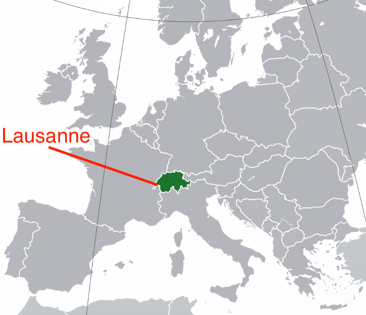 <img src="static/epfl.png" height="250px"> - (almost) PhD in Neuroscience - enthusiastic about teaching - programmer since 10 years --- name: content class: left layout: false name: meme ## Why am I talking to you? - Nipype has currently 168 developers (~16 in core team) - I joined the group in 2011 - Back then, the library was missing a clear manual or tutorial - I wrote a tutorial, that so far was well received: https://miykael.github.io/nipype_tutorial/ 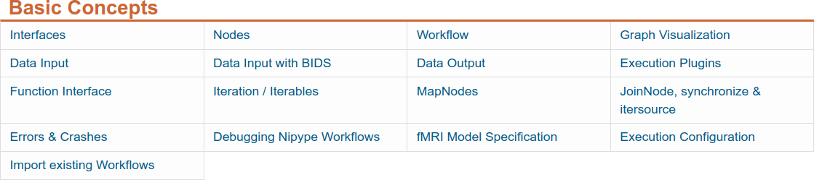 - More about this later! --- name: inverse layout: true class: center, middle, inverse --- # What is Nipype? ## A short introduction --- name: content class: left layout: false name: intro <img src="static/logoNipype_text.png" width="100%"> -- ## What is [Nipype](http://nipype.readthedocs.io/en/latest/)? - open-source, community-developed software package written in **Python**. - Provides unified way of **interfacing** with heterogeneous neuroimaging software like [SPM](http://www.fil.ion.ucl.ac.uk/spm/), [FSL](http://fsl.fmrib.ox.ac.uk/fsl/fslwiki/), [FreeSurfer](http://surfer.nmr.mgh.harvard.edu/), [AFNI](https://afni.nimh.nih.gov/afni), [ANTS](http://stnava.github.io/ANTs/), [Camino](http://web4.cs.ucl.ac.uk/research/medic/camino/pmwiki/pmwiki.php), [MRtrix](http://www.brain.org.au/software/mrtrix/index.html), [MNE](https://martinos.org/mne/stable/index.html), [Slicer](https://www.slicer.org/) and many more. - Allows users to create **flexible, complex workflows** consisting of multiple processing steps using any software package above - Efficient and optimized computation through **parallel execution** plugins --- ## I don't need that, I'm happy with SPM12! I mean, there's no problem with SPM's batch system... 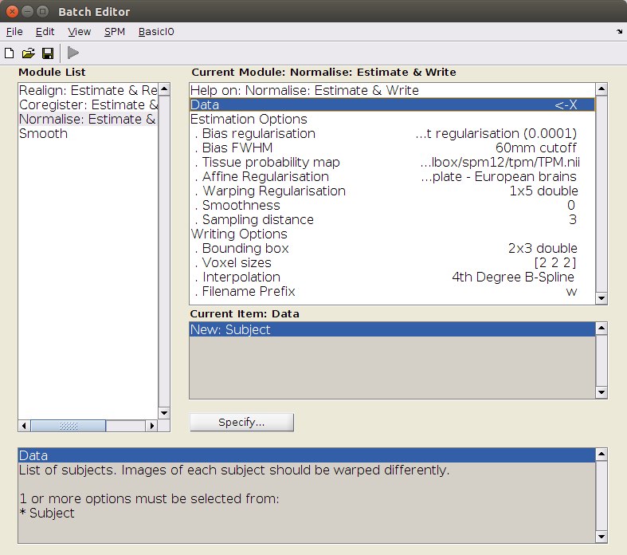 ok, ok... it gets tiring to have a separate batch script for each subject and MATLAB license issues are sometimes a pain. But hey, the nice looking GUI makes it so easy to use! --- ## SPM in Nipype Using SPM12 with Nipype is simpler than any `matlabbatch` and it's intuitive to read: ```python from nipype.interfaces.spm import Smooth smooth = Smooth() smooth.inputs.in_files = 'functional.nii' smooth.inputs.fwhm = 6 smooth.run() ``` --- ## I don't need that, I'm happy with FSL! The GUI might look a bit old fashion but the command line interface gives me all the flexibility I need! 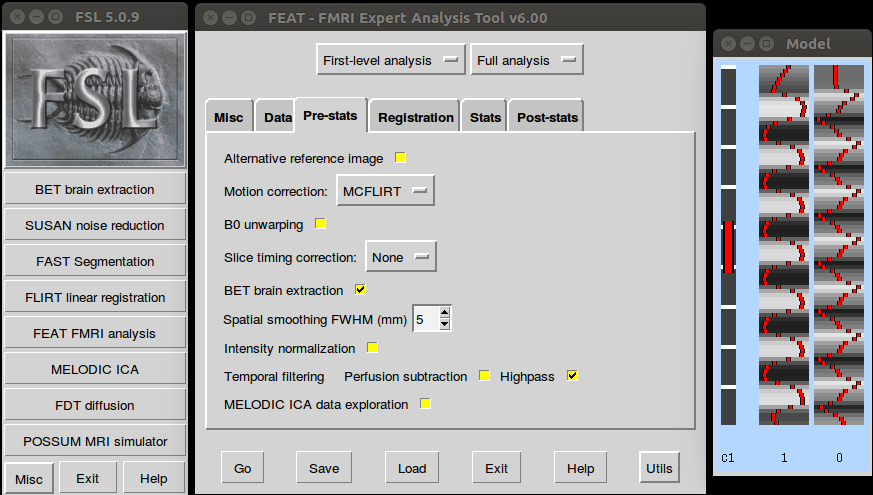 I don't care that it might be more difficult to learn than other neuroimaging software. At least it doesn't take me 20 clicks to do simple motion correction. And once you figure out the underlying commands, it's rather simple to script. --- ## FSL in Nipype Nipype makes using FSL even easier: ```python from nipype.interfaces.fsl import MCFLIRT mcflt = MCFLIRT() mcflt.inputs.in_file = 'functional.nii' mcflt.run() ``` And gives you transparency to what's happening under the hood with one additional line: ```python In [1]: mcflt.cmdline Out[1]: 'mcflirt -in functional.nii -out functional_mcf.nii' ``` --- ## I don't need that, I'm happy with FreeSurfer! You and your problems with fMRI data. I'm perfectly happy with FreeSurfer's command line interface. It gives me all I need to do surface-based analyses. 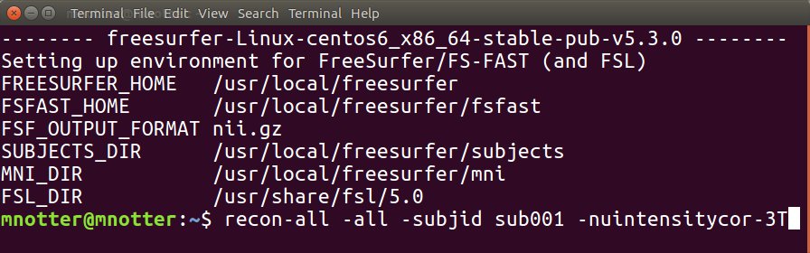 Of course, you can run your sequential FreeSurfer scripts as you want. But wouldn't it be nice to optimize computation time by using parallel computation? --- ## FreeSurfer in Nipype Let's imagine you want to do smoothing on the surface... - with **two different smoothing kernels** values - on **both hemispheres** - on **six subjects** - all in **parallel**? -- With Nipype this is as simple as that: ```python from nipype.interfaces.freesurfer import SurfaceSmooth smoother = SurfaceSmooth() smoother.inputs.in_file = "{hemi}.func.mgz" smoother.iterables = [("hemi", ['lh', 'rh']), ("fwhm", [4, 8]), ("subject_id", ['sub01', 'sub02', 'sub03', 'sub04', 'sub05', 'sub06']), ] smoother.run(mode='parallel') ``` --- ## But I like my neuroimaging toolbox - You can keep it! But instead of being stuck in MATLAB with SPM, or having scripting issues with FreeSurfer, ANTs or FSL,.. - **Nipype** gives you the possibility to select the algorithms that you prefer from many different software packages. - In short, you can have all the advantages without the disadvantage of being stuck with a programming language or software package --- ## A Short Example Let's assume we want to do preprocessing that uses **SPM** for *motion correction*, **FreeSurfer** for *coregistration*, **ANTS** for *normalization* and **FSL** for *smoothing*. Normally this would be a hell of a mess. It would mean switching between multiple scripts in different programming languages with a lot of manual intervention. **Nipype comes to the rescue!** 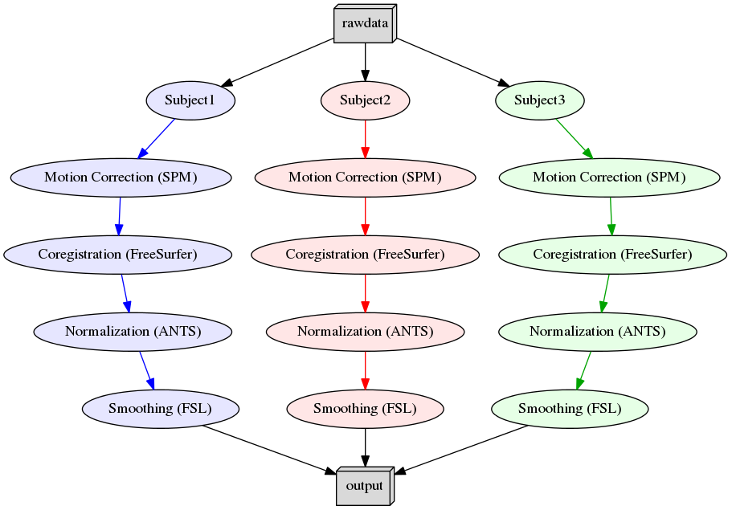 --- # Code Example The code to create a Nipype workflow like the example before would look something like this: ```python # Import modules from nipype.interfaces.freesurfer import BBRegister from nipype.interfaces.ants import WarpTimeSeriesImageMultiTransform from nipype.interfaces.fsl import SUSAN from nipype.interfaces.spm import Realign ``` ```python # Motion Correction (SPM) realign = Realign(register_to_mean=True) ``` ```python # Coregistration (FreeSurfer) coreg = BBRegister() ``` ```python # Normalization (ANTS) normalize = WarpTimeSeriesImageMultiTransform() ``` ```python # Smoothing (FSL) smooth = SUSAN(fwhm=6.0) ``` --- ```python # Where can the raw data be found? grabber = nipype.DataGrabber() grabber.inputs.base_directory = '~/experiment_folder/data' grabber.inputs.subject_id = ['subject1', 'subject2', 'subject3'] ``` ```python # Where should the output data be stored at? sink = nipype.DataSink() sink.inputs.base_directory = '~/experiment_folder/output_folder' ``` -- ```python # Create a workflow to connect all those nodes preprocflow = nipype.Workflow() ``` ```python # Connect the nodes to each other preprocflow.connect([(grabber -> realign ), (realign -> coreg ), (coreg -> normalize), (normalize -> smooth ), (smooth -> sink ) ]) ``` ```python # Run the workflow in parallel preprocflow.run(mode='parallel') ``` **Important**: This code is a shortened and simplified version of the real Nipype code. But it gives you a good idea of how intuitive it is to use Nipype for your neuroimaging analysis. --- ## So again, what is Nipype? Nipype consists of many parts, but the main ones are [Interfaces](basic_interfaces.ipynb), the [Workflow Engine](basic_workflow.ipynb) and the [Execution Plugins](basic_plugins.ipynb): <img src="static/nipype_architecture.png" width="575"> * **Interface**: Wraps a program or function * **Node/MapNode**: Wraps an `Interface` for use in a Workflow * **Workflow**: A *graph* or *forest of graphs* whose edges represent data flow * **Plugin**: A component that describes how a `Workflow` should be executed --- name: inverse layout: true class: center, middle, inverse --- # Nipype in action! ### Showcasing some practical examples --- name: content class: left layout: false name: examples ### Notebook 1 Short Introduction to Nipype ### Notebook 2 Precomputed example of a Full Preprocessing Pipeline --- ## Recap of the Basics - Part 1 * **Interface**: Module to run well-defined tasks (i.e. smoothing, skull extraction, etc.) ```python from nipype.interfaces.fsl import BET BET.help() # To get help ``` -- * **Node**: Wraps around an interface and lets you connect them to each other ```python from nipype import Node bet = Node(BET(frac=0.3), name='bet_node') ``` -- * **Workflow**: Collection of nodes, connected in a directed fashion (i.e. graph) ```python from Nipype import Workflow wf = Workflow(name="smoothflow", base_dir="/output/working_dir") wf.connect([(smooth, mask, [("out_file", "in_file")])]) ``` -- * **Graph Visualization**: Helps you to better understand a built workflow ```python wf.write_graph(graph2use='colored') ``` --- ## Recap of the Basics - Part 2 * **Data Input**: There are many ways to get your data into a workflow, e.g. `DataGrabber`, `SelectFinder`, etc. -- * **Data Output**: There are many ways to keep only desired workflow output, e.g. `DataSink` -- * **Execution Plugins**: Different ways to run a workflow, i.e. sequential, parallel, on a cluster ```python workflow.run(plugin='Linear') workflow.run(plugin='MultiProc', plugin_args={'n_procs': 4}) workflow.run('SGEGraph', plugin_args={'qsub_args': '-q many'}) ``` -- * **Function Interface**: Shortcut to create your own interface ```python def write_parameter_to_txt(my_parameter): import numpy as np out_file = 'new_parameter.txt' np.savetxt(out_file, [my_parameter], fmt='%d') return out_file write_paraemter = Node(Function(input_names=['my_parameter'], output_names=['out_file'], function=write_parameter_to_txt), name='write_paraemter') ``` --- ## Recap of the Basics - Part 3 * **Iterables** (left): Allows to iterate over a specific parameter, e.g. subject name, smoothing kernel ```python isosmooth = Node(IsotropicSmooth(), name='iso_smooth') isosmooth.iterables = ("fwhm", [4, 8, 16]) ``` 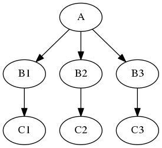 --- ## Recap of the Basics - Part 4 * **MapNode** (right): Allows to iterate over a specific parameter, e.g. subject name, smoothing kernel ```python from nipype import MapNode gunzip = MapNode(Gunzip(), name='gunzip', iterfield=['in_file']) gunzip.inputs.in_file = ['func01.nii.gz', 'func02.nii.gz', 'func03.nii.gz'] ``` 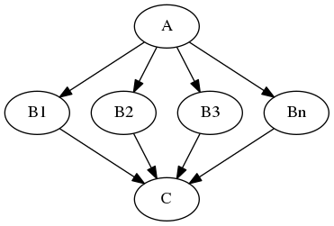 --- name: inverse layout: true class: center, middle, inverse --- # Why is this all important? --- name: content class: left layout: false name: me ## Advantages of using Nipype - Easy to write processing pipelines - Speed up computation time through parallelism - Profit from fast Python ecosystem and many amazing neuroimaging libraries - Easy to share your code and resuse others' --- ## Transparency and reproducibility crisis - Neuroimaging seems to have some issues with transparency and reproducibility ([Gorgolewski & Poldrack, PLos Bio (2016)](https://www.ncbi.nlm.nih.gov/pmc/articles/PMC4936733/)) - Best solution is to be open source / open science - Nipype and other toolboxes have the opportunity to help --- class: center, middle ##transparency open data + open code + provenance = transparency ##reproducibility data snapshots + software containers = reproducibility ######[*Gorgolewski, K. J., talk at MPI Leipzig, December 2017](https://osf.io/vpxrj/)</small> --- name: inverse layout: true class: center, middle, inverse --- # Where are we going with it? --- name: content class: left layout: false name: overview ## The future of Nipype - Nipype version 1.0 was released on January 25th, 2018 - Current version is 1.5 - Version 2.0 is under heavy development and will help to improve Nipype's flexibility - Let's look at what other's built on top of Nipype! --- ## Showcase of great examples and connected topics - [BIDS](http://bids.neuroimaging.io/) - Brain Imaging Data Structure - [MRIQC](http://mriqc.readthedocs.io/en/latest/) - MRI Quality Control tool - [fMRIPrep](http://fmriprep.readthedocs.io/en/latest/index.html) - Fully automated fMRI data preprocessing tool - [BIDS Apps](http://bids-apps.neuroimaging.io) - [fMRIflows](https://github.com/miykael/fmriflows) - my contribution to the neuroimage ecosystem --- ## [BIDS](http://bids.neuroimaging.io/) - Brain Imaging Data Structure A new standard for organizing & describing neuroimaging & behavioral data -- ### What does it look like? 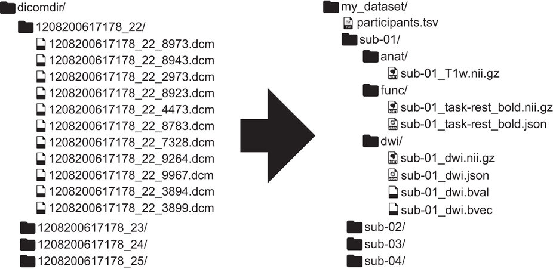 .right[*Gorgolewski, K. J. et al. 2016*] --- ## [BIDS](http://bids.neuroimaging.io/) - Brain Imaging Data Structure ### BIDS contains: participant information 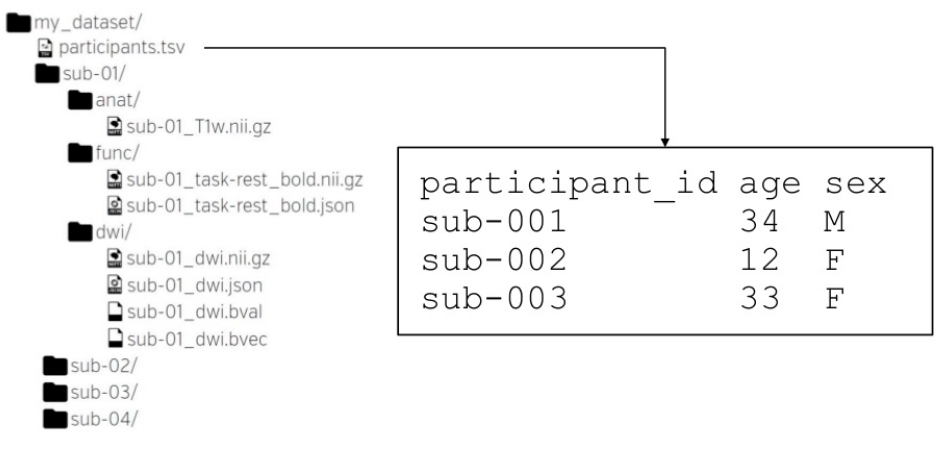 --- ## [BIDS](http://bids.neuroimaging.io/) - Brain Imaging Data Structure ### BIDS contains: data files (neuroimaging / behavioral) 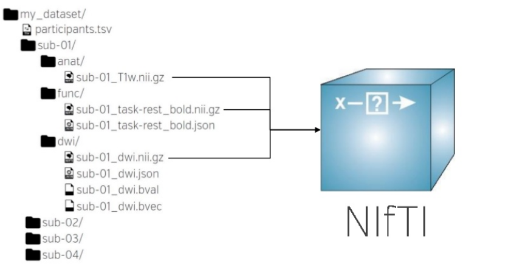 --- ## [BIDS](http://bids.neuroimaging.io/) - Brain Imaging Data Structure ### BIDS contains: study specific JSON files (sequence & paradigm) 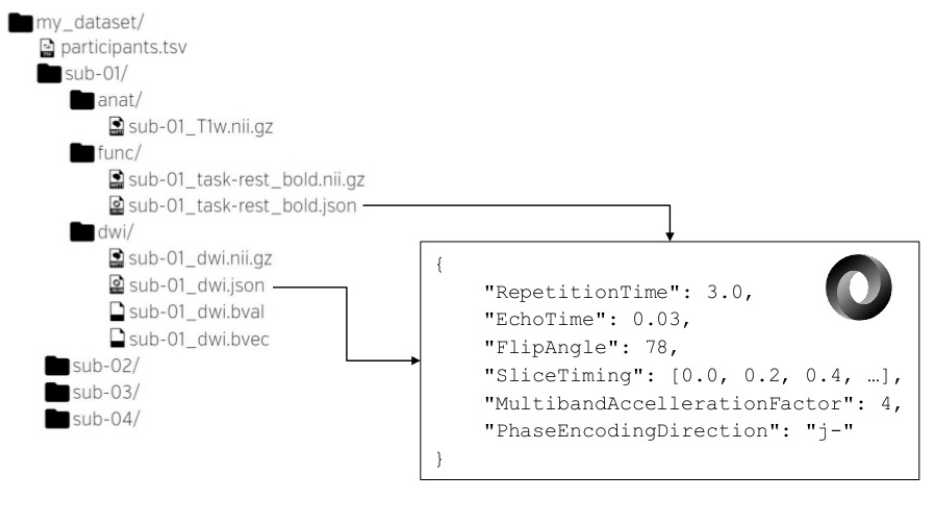 --- ## [MRIQC](http://mriqc.readthedocs.io/en/latest/) - MRI Quality Control tool -- - Quality of MRI data is not necessarily good - **Quality Control is important!** - MRIQC provides automatic prediction of quality and visual reporting of MRI scans #### Anatomical and Functional Workflow 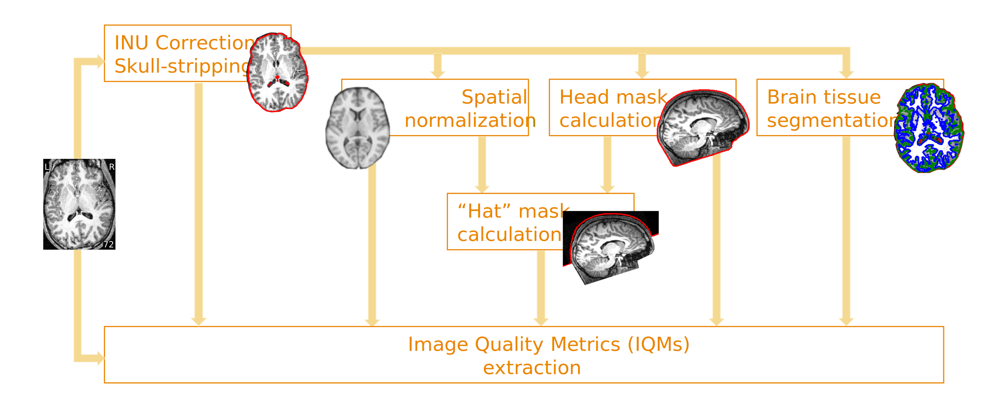 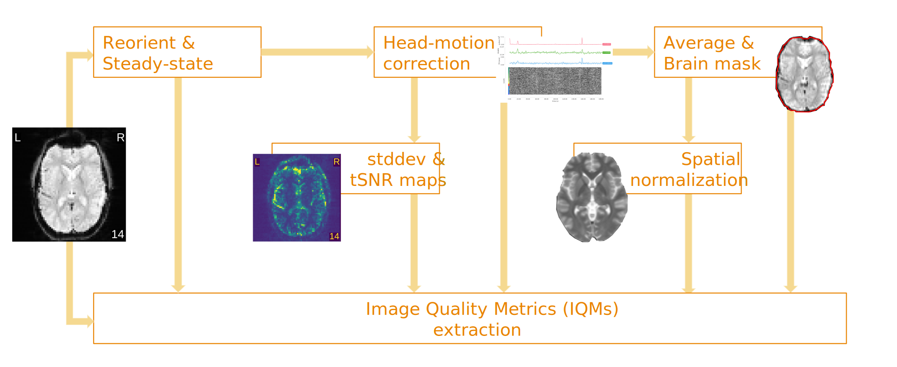 .left[<small>*[MRIQC docs](https://mriqc.readthedocs.io/en/latest/workflows.html), (C) Esteban, O. </small>] --- ## [MRIQC](http://mriqc.readthedocs.io/en/latest/) - Visual Reports Check out the two examples to see how a visual report looks like: - [Group Anatomical Report](http://web.stanford.edu/group/poldracklab/mriqc/reports/anat_group.html) - [Group Functional Report](http://web.stanford.edu/group/poldracklab/mriqc/reports/func_group.html) --- ## [fMRIPrep](http://fmriprep.readthedocs.io/en/latest/index.html) - Fully automated fMRI data preprocessing tool -- - state-of-the-art interfaces - robust to variations in scan acquisition protocols - easy interpretable and comprehensive error and output reporting - "glass" rather than "black" box [Example](http://fmriprep.readthedocs.io/en/latest/_static/sample_report.html) of a visual report. --- ## [fMRIPrep](http://fmriprep.readthedocs.io/en/latest/index.html) - Processing Pipeline Overview 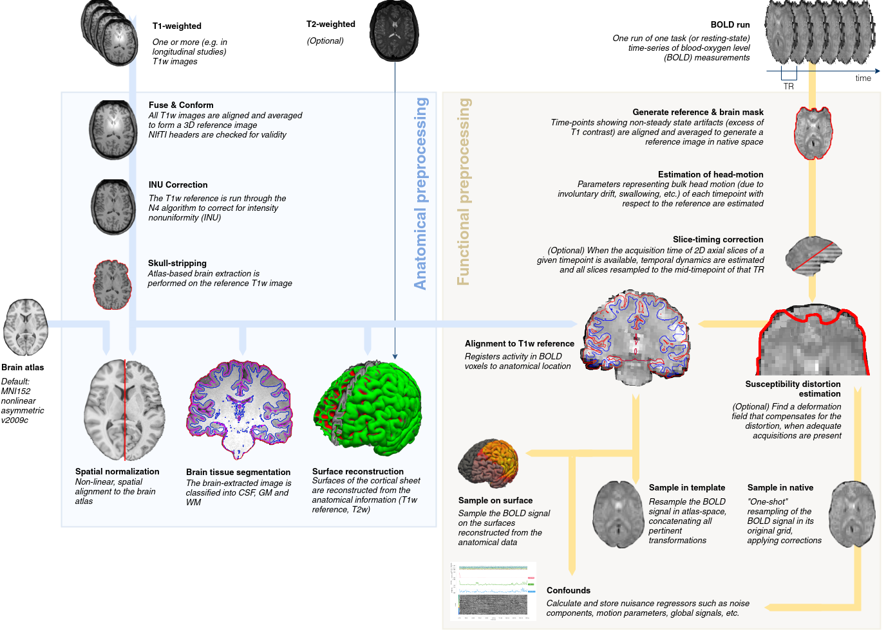 --- ## [fMRIPrep](http://fmriprep.readthedocs.io/en/latest/index.html) - Example of Confounds 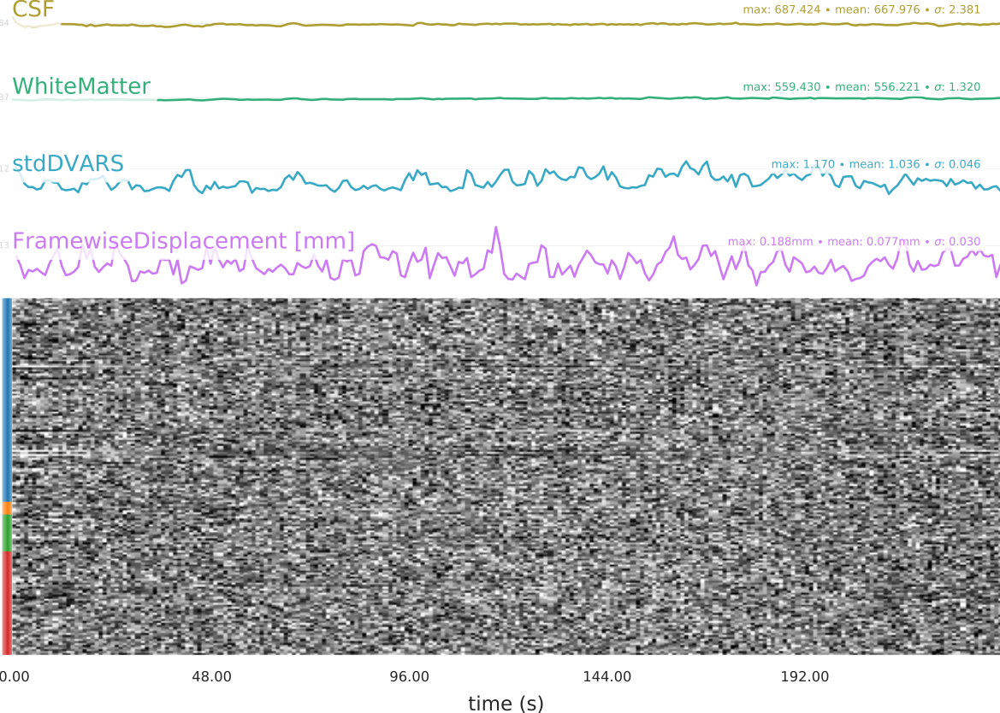 --- ## [BIDS Apps](http://bids-apps.neuroimaging.io) A BIDS App is a container (~virtual machine) that captures a neuroimaging pipeline -- - A BIDS App only needs a BIDS conform dataset as input - does not depend on any software outside of the image other than the container engine - deposited in the Docker Hub repository (openly accessible) - works on Linux, macOS, windows - [List of Apps](http://bids-apps.neuroimaging.io/apps/) --- ## [fMRIflows](https://github.com/miykael/fmriflows) - my contribution <img src="static/logo_fmriflows.gif" width="30%" /> - A collection of fully autonomous uni- & multivariate fMRI processing pipelines - Comprises: - anatomical and functional preprocessing - estimation of singal confounds - univariate and multivariate analysis on the subject and group level - Still under development, not yet officially released. --- ## How to learn more! - [Nipype Tutorial](https://miykael.github.io/nipype_tutorial/) - [2-day Workshop at University of Cambridge, UK](https://nbviewer.jupyter.org/github/miykael/workshop_cambridge/blob/master/program.ipynb) - [Neurostars.org](https://neurostars.org/) - Stack Overflow for Neuroscience --- name: inverse layout: true class: center, middle, inverse --- # Q & A